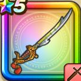

ガイアのつるぎ
攻略班 7.0点 / ドラゴン斬りマヌーサメタル斬りプラズマウェーブガイアブレード※錬成で強化可能
くわしい特徴
【レベル別習得スキル】 Lv1【魔法戦士】さいだいMP+5 Lv1【バトマス】さいだいHP+5 Lv1ドラゴン斬り（消費MP：5）ドラゴン系に威力200%それ以外の系統には130%の斬撃ダメージを与える Lv10マヌーサ（消費MP：16）敵全体を幻でつつみこむ Lv15メタル斬り（消費MP：6）メタルボディを切り裂く一撃で、メタル系に斬撃ダメージを与える Lv20プラズマウェーブ（消費MP：20）敵全体に威力190％のデイン属性斬撃ダメージを与える Lv30ガイアブレード（消費MP：26）敵1体に威力360％のジバリア属性斬撃ダメージを与え、確率で転ばせる Lv30ドラゴン系へのダメージ+5% Lv40物質系へのダメージ+5% Lv45攻撃時+2%の確率で転びを与える Lv50攻撃力+12錬成スキル改1物質系へのダメージ+10%改2ガイアブレード改（消費MP：31）敵1体に威力470%のジバリア属性斬撃ダメージを与え転ばせる。転んでいる相手には威力が600%に上昇する改3ドラゴン系へのダメージ+10%改4錬成ぶき特別演出解放・メガモン討伐結果発表時に特別演出が追加・武器の見た目に特別なエフェクトが追加 【限界突破スキル】 1凸スキルの斬撃・体技ダメージ+5% 2凸スキルの斬撃・体技ダメージ+5% 3凸スキルの斬撃・体技ダメージ+5% 4凸スキルの斬撃・体技ダメージ+5%